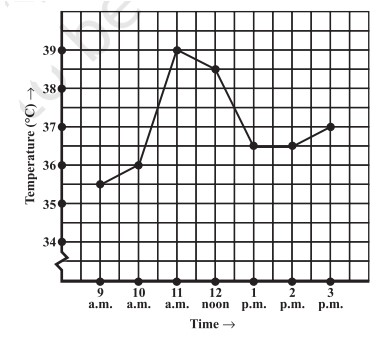
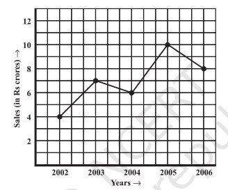
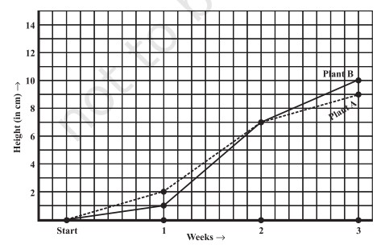
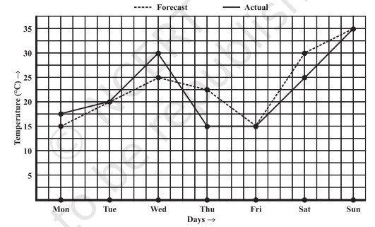
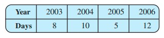
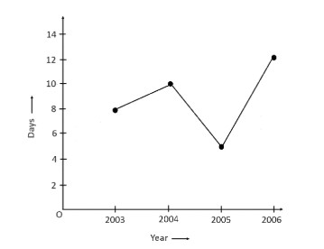
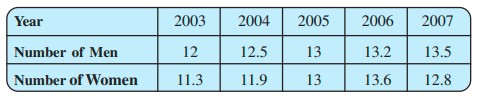
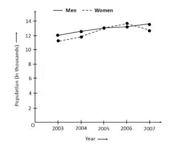
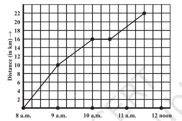
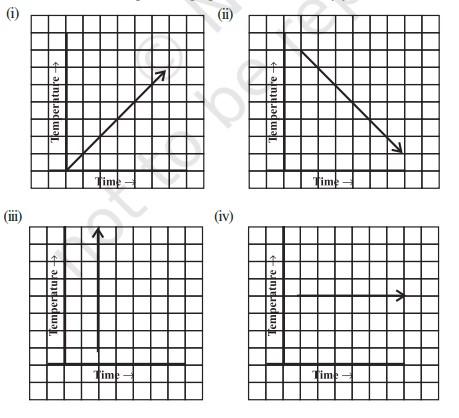

EXERCISE 13.1 — Solutions
1. The following graph shows the temperature of a patient in a hospital, recorded every hour.

Graph 13.1.1: Patient temperature vs time.
(a) What was the patient’s temperature at 1 p.m.?
36.5°C
(b) When was the patient’s temperature 38.5°C?
At 12 noon
(c) The patient’s temperature was the same two times during the period given. What were these two times?
At 1 p.m. and 2 p.m.
(d) What was the temperature at 1.30 p.m.? How did you arrive at your answer?
It was 36.5°C. The point halfway on the x-axis between 1 p.m. and 2 p.m. represents 1.30 p.m.; the y-value halfway between 36°C and 37°C gives 36.5°C.
(e) During which periods did the patient’s temperature show an upward trend?
From 9 a.m. to 11 a.m. and from 2 p.m. to 3 p.m.
2. The following line graph shows the yearly sales figures for a manufacturing company.

Graph 13.1.2: Yearly sales figures.
(a) What were the sales in (i) 2002 (ii) 2006?
(i) Rs. 4 crores, (ii) Rs. 8 crores
(b) What were the sales in (i) 2003 (ii) 2005?
(i) Rs. 7 crores, (ii) Rs. 10 crores
(c) Compute the difference between the sales in 2002 and 2006.
Rs. 4 crores
(d) In which year was there the greatest difference compared to its previous year?
In 2005 (Rs. 4 crores increase)
3. For an experiment in Botany, two plants A and B were grown and their heights were measured each week for 3 weeks.

Graph 13.1.3: Plant A and Plant B growth.
(a) How high was Plant A after (i) 2 weeks (ii) 3 weeks?
(i) 7 cm, (ii) 9 cm
(b) How high was Plant B after (i) 2 weeks (ii) 3 weeks?
(i) 7 cm, (ii) 10 cm
(c) How much did Plant A grow during the 3rd week?
2 cm
(d) How much did Plant B grow from end of 2nd to end of 3rd week?
3 cm
(e) During which week did Plant A grow most?
Second week
(f) During which week did Plant B grow least?
First week
(g) Were the two plants of the same height during any week?
Yes, at the end of the 2nd week (7 cm)
4. The following graph shows the forecast and actual temperature each day of a week.

Graph 13.1.4: Forecast vs Actual temperatures.
(a) On which days was the forecast temperature the same as the actual temperature?
Tuesday, Friday, Sunday
(b) What was the maximum forecast temperature during the week?
35°C
(c) What was the minimum actual temperature during the week?
15°C
(d) On which day did the actual temperature differ the most from the forecast?
Thursday
5. Use the tables below to draw linear graphs.


Graph 13.1.5(a): Snow days in years.


Graph 13.1.5(b): Population of men and women.
6. A courier person cycles from a town to a suburban area. His distance from the town at different times is shown by the graph.

Graph 13.1.6: Courier distance vs time.
(a) What is the scale taken for the time axis?
4 units = 1 hour
(b) How much time did the person take for the travel?
3½ hours
(c) How far is the place of the merchant from the town?
22 km
(d) Did the person stop on his way? Explain.
Yes. The horizontal part of the graph shows he stayed from 10:00 a.m. to 10:30 a.m.
(e) During which period did he ride fastest?
Between 8 a.m. and 9 a.m.
7. Can there be a time-temperature graph as follows? Justify your answer.

Graph 13.1.7: Examples of time-temperature graphs.
(i)
Possible — temperature increases with time.
(ii)
Possible — temperature decreases with time.
(iii)
Not possible — shows unrealistic sudden rapid rise.
(iv)
Possible — constant temperature.
Designed & Developed by Zahid Qayoom